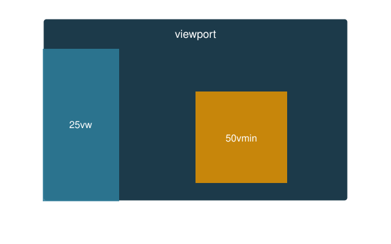

Work in pairs, preferably
Read the slides trough, look up things as you go through
Work on the exercise individually, on your own project
ask the instructor for questions or help with your project
ask your colleague to check your web site on their computer/phone
the part of the page that is visible in the browser window (or on the phone screen)
Its size changes with the device, and with the window on a desktop
Mobile browsers assume a virtual width of circa 980px and then shrink the page to fit: everything looks tiny
Tell the browser to use the real screen width, add in the <head>:
width=device-width: the page is as wide as the screen
initial-scale=1.0: no zoom when the page first loads
A page is responsive when it adapts to the device (viewport) it runs on.
Boxes and text must therefore be sized in a way that adapts, not in a way that stays fixed.
Available units of measure:
px → rem → em → % → vw, vh and friends
pxfix the physical device (a display or a printer, each have PPI *density)
Q: what is the PPI of your smartphone? Search for your phone specs
A pixel is a fixed measure: 96px to an inch, 28.3px to a cm.
Predictable, easy to reason about
not adaptive/responsive: neither to the screen, nor to the reader’s preferred font size
px is fixedThings that should not scale:
borders: 1px solid
thin shadows and outlines
small fixed gaps
For text and layout, prefer relative units.
remrem = root em: relative to the font size of the html element, for the whole page
Now 1rem = 20px, 1.5rem = 30px and so on
By default, browsers set font-size: 16px; so 1rem = 16px
A reader who raised the default text size in the browser gets a page that grows with it, only if we use rem, not px.
rem in practiceChange html { font-size } once and everything scales together.
emem is relative to the font size of the container we’re in, not the whole document
em compounds| element | size |
|---|---|
.a |
20px |
.b |
30px |
.c |
45px |
Nested elements keep multiplying!
rem never does: it always goes back to the root.
em useful?When a measure should follow the element’s own text size
rem or em?rem |
em |
|
|---|---|---|
| relative to | root html |
parent / element itself |
| nesting | no surprises | compounds |
| use for | font sizes, page spacing | padding / margin inside a component |
Rule of thumb: rem by default, em inside components
Almost every other measure is derived from the font size
rem is a multiple of the root font size
em is a multiple of the element’s font size
% on font-size is a share of the parent’s font size
Change one line and the whole page scales: text, padding, margins, headers
Set later, or in px in many places, and you must hunt down every value
Set it on the wrong element and the units drift:
rem only looks at html, so a font-size on body or on * does not change what 1rem means
*, html, body| selector | matches | typical use |
|---|---|---|
* |
every element, one by one | box-sizing, resets of margin and padding |
html |
the root element | base font-size (the reference for rem) |
body |
the visible page, child of html |
font-family, line-height, color, background |
* is not inheritanceA rule on html or body is inherited by the elements inside
A rule on * is applied to each element directly, and beats inheritance
%Relative to the parent box
will always take up half of the parent, whatever the screen
Remember box-sizing: border-box; so that padding and border stay inside that 50%
% means different things for different properties
width, margin-left, padding-right: % of the parent’s width
height: % of the parent’s height, which must be set explicitly, or it does nothing
font-size: % of the parent’s font size
Units that take the viewport as reference, as seen at the start

vw and vh1vw = 1% of the viewport width
1vh = 1% of the viewport height
vmin and vmax1vmin = 1% of the smaller of the two viewport dimensions
1vmax = 1% of the larger one
Turn the phone: the square keeps fitting.
start from your mystyle.css
set html { font-size: 100%; }
convert all font sizes from px to rem
make the header height 5rem instead of 64px
What happens when you change the browser’s default text size?
amend the .hero setup
full window height with min-height: 100dvh
a title with clamp(1.5rem, 5vw, 3rem)
a button whose padding is in em
What happens when you
resize the window?
turning your phone sideways?
next page shows a cheatsheet
| unit | relative to | typical use |
|---|---|---|
px |
nothing (fixed) | borders, shadows |
rem |
root font size | font sizes, vertical spacing |
em |
element / parent font size | padding inside components |
% |
parent box | widths, horizontal spacing |
vw / vh |
viewport width / height | full-screen sections, fluid text |
vmin / vmax |
smaller / larger viewport side | squares, backgrounds |
px for what must not scale
rem for text and spacing, em inside components
% for what follows the parent
vw, vh for what follows the screen: cap them with clamp()
Add all these setups to your mystyle.css and bring it with you across projects